VeraCrypt || فيراكربت
الاسم: فيراكربت
المهمة: تشفير الملفات، الأقراص الصلبة، وحدات التخزين، نظام
التشغيل
أنظمة التشغيل التي يعمل عليها: ويندوز، ماك، لينكس
الثمن: مجاني
كيف يعمل؟
يقوم فيرا كريبت بتشفير الملفات عبر إنشاء مجلد وهمي داخل جهاز الكمبيوتر، على شكل "ملف" محمي بكلمة سر، عند فتح "الملف" يتحول إلى "مجلد" يمكننا من أن نضع بداخله كافة الملفات والمجلدات التي نريد تشفيرها أو حمايتاه
ما هو الفرق بين المجلد والملف؟
الملف: هو مكان لتخزين البيانات، مثل: ملف وورد، ملف جداول اكسل، صورة، أو أغنية
المجلد: هو مكان لتخزين الملفات، يمكن للمجلد أن يحتوي ملفات مختلفة، يمكن تشبيه الملف أو الملفات بـ الكتب | وتشبيه المجلد بـ المكتبة
عند الإنتهاء من العمل على المجلد المشفر، نقوم بإغلاقه، فيعود إلى شكل ملف لا يمكن فتحه إلا عبر تطبيق فيرا كريبت وكلمة السر الخاصة به فقط
كما يمكن أيضاَ:
نقل أو نسخ المجلد المشفر ﻷي جهاز وعبر أي وسيلة تخزين أو إرساله ﻷي شخص في حال الرغبة بإرسال ملفات أو مجلدات مشفرة لشخص أو جهة ما وإعطائهم كلمة السر بطريقة أٌخرى، حيث يمكنك إنشاء مجلد مشفر عبر فيراكريبت وإرساله إلى شخص أو جهة ما عبر البريد الإلكتروني، وإعطائهم كلمة السر عبر تطبيق تواصل آمن مثل Signal أو واتس آب
يتكون هذا الدليل من ثلاثة أقسام رئيسية :
1- تنصيب برنامج فيرا كريبت
- الحصول على التطبيق:
- نضغط على المربع بجانب عبارة "I accept the license" لتظهر اشارة [㇢]
- نضغط على "Next"
-
نختار "Install"
-
نضغط على "Next"

بعدها تبدأ عملية التنصيب
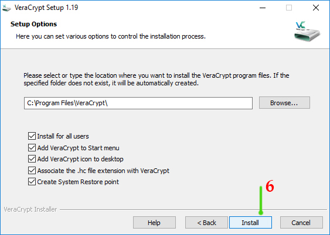 -
نضغط على خيار "Install"
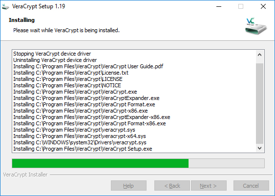 -
عند الإنتهاء، تظهر الرسالة التالية، وتعني بأنه تم تنصيب البرنامج
نضغط على "OK"
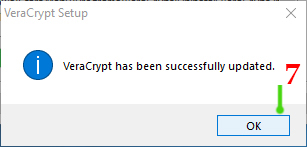
بعد الإنتهاء من تنصيب البرنامج، تظهر الرسالة التالية
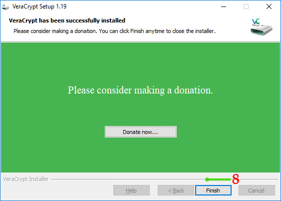
الخيار "Donate now" هو للتبرع للقائمات والقائمين على إعداد التطبيق
- نضغط على خيار "Finish" ﻹنهاء الإعداد

2- إنشاء حافظة\مجلد مشفر
-
بعد اكتمال تنصيب البرنامج على جهاز الكمبيوتر،
نقوم بتشغيل البرنامج، عادةً يكون اختصار البرنامج موجود على سطح المكتب، أو ضمن قائمة "ابدأ" لأجهزة
ويندوز أو قائمة
البرامج لأجهزة ماك
-
نضغط على خيار "Create Volume" لـ :
- إنشاء مجلد مشفر
- تشفير أحد الأقراص الداخلية في الجهاز أو وسائط التخزين الخارجية
- تشفير نظام التشغيل
صفحة VeraCrypt Volume Creation Wizard - الخيار الأول: إنشاء حافظة\مجلد مشفر
- الخيار الثاني: تشفير Flash memory أو تشفير أحد الأقراص في جهاز الكمبيوتر "عدا القرص الذي يحوي نظام التشغيل"
- الخيار الثالث: تشفير نظام التشغيل بشكل كامل
- نختار الخيار الأول "Create an encrypted file container"
- نضغط على خيار "Next" صفحة Volume Type
- الأول: إنشاء مجلد مشفر
- الثاني: إنشاء مجلد مشفر مخفي
- نختار "Standard veraCrypt volume"
- نضغط على خيار "Next" صفحة Volume Location
- نضغط على "Select File" نحدد المكان الذي نريد إنشاء المجلد فيه (سطح المكتب أو أي مكان آخر)
- في حقل "File name" نكتب اسم المجلد التي نريد انشائه
- نضغط على خيار "Save"
- نضغط على خيار "Next"
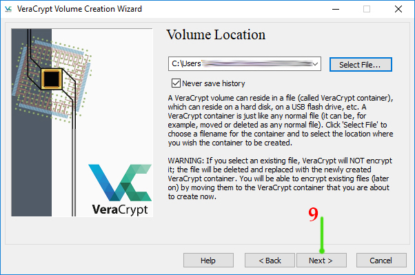
صفحة Encryption Options - نختار الخوارزمية التي نريدها، يمكن اختيار أي خوارزمية
- نضغط على خيار "Next" صفحة Volume Size
- نكتب قيمة الحجم
بعد إنشاء المجلد المشفر، لا يمكن تغيير حجمه - نختار مقياس الحجم: كيلو بايت - ميغا بايت - غيغا بايت - تيرا بايت
- كل 1000 كيلو بايت = 1 ميغا بايت
- كل 1000 ميغا بايت = 1 غيغا بايت
- كل 1000 غيغا بايت = 1 تيرا بايت
- نضغط على "Next" صفحة Volume Password
- ضمن خانة "Password" نضع كلمة السر التي نريدها
- ضمن خانة "Confirm" نقوم بإعادة كتابة كلمة السر مرة اُخرى
بعد تشغيل البرنامج، تظهر النافذة التالية

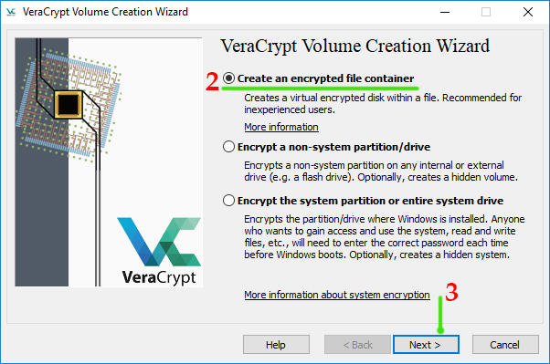
تحديد نوعية المجلد التي نريد انشائه
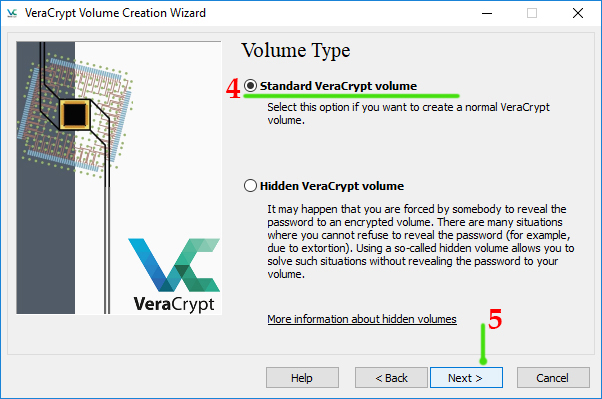
يوجد خياران:
تحديد المكان الذي نريد إنشاء المجلد فيه
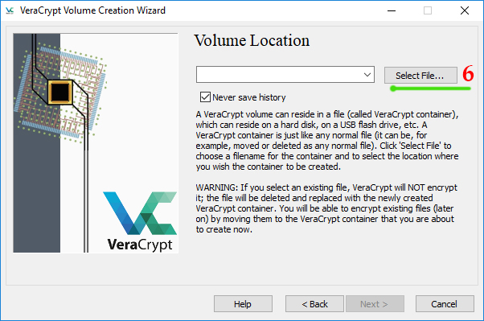
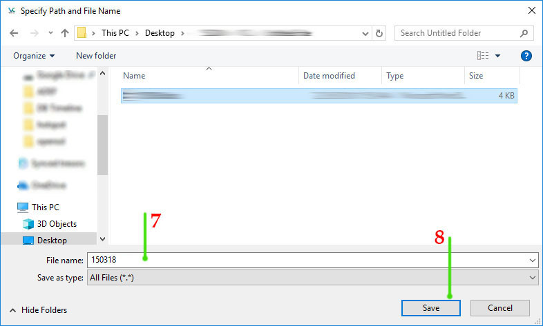
تحديد خوارزمية التشفير التي نريد استخدامها

تحديد حجم المجلد التي نريد انشائه
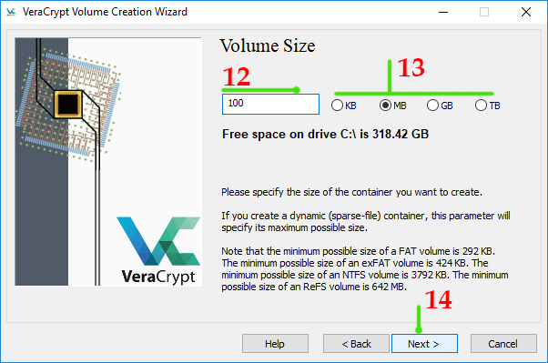
إنشاء كلمة سر للمجلد المشفر
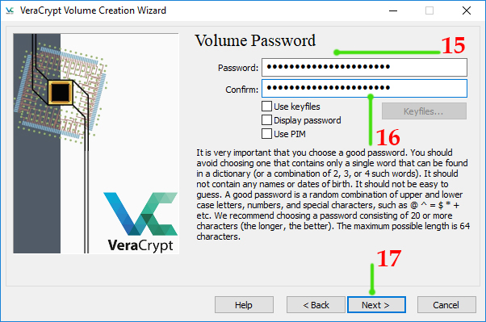